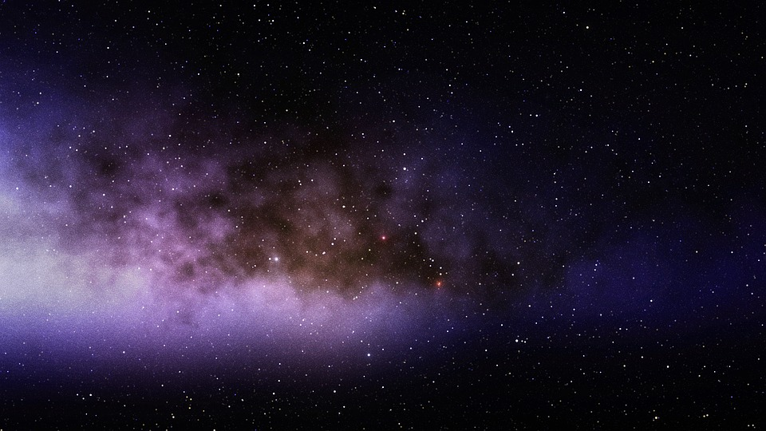
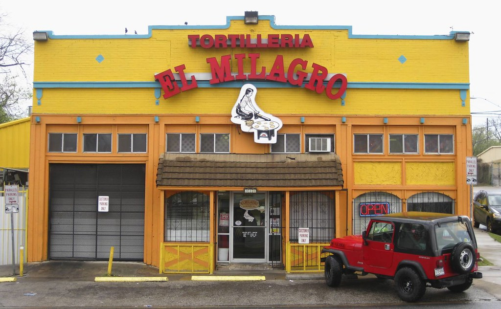

EE Proyectos:

1. Espacio Escultórico

Uno de los sitios emblemáticos de la Universidad Nacional Autónoma de México es, sin duda, el Espacio Escultórico.
Inaugurado el 23 de abril de 1979, el Espacio Escultórico surgió como idea del escultor Federico Silva en 1977, con el propósito de plasmar las artes plásticas y el movimiento escultórico geométrico en México en un entorno natural.
El centro de este espacio se encuentra ubicado en la zona del Centro Cultural Universitario, en una superficie de terreno natural. Se compone de dos partes, una plataforma de desplante y una serie de figuras geométricas.
2. Cielo Estrellado
El número de estrellas observables a simple vista desde la Tierra se ha calculado en unas 8.000, la mitad en cada hemisferio. Durante la noche no se pueden ver más de 2.000 al mismo tiempo, el resto quedan ocultas por la neblina atmosférica, sobre todo cerca del horizonte, y la pálida luz del cielo.
3. Tortilleria Mágica
El maíz es un cereal que se obtiene del grano de una planta; nació en México hace 7,000 años (5,000 antes de Cristo). En aquella época no existía México como país, por eso se dice que nació en Mesoamérica, territorio que comprende el centro y sur de nuestro país y una parte de los países centroamericanos.